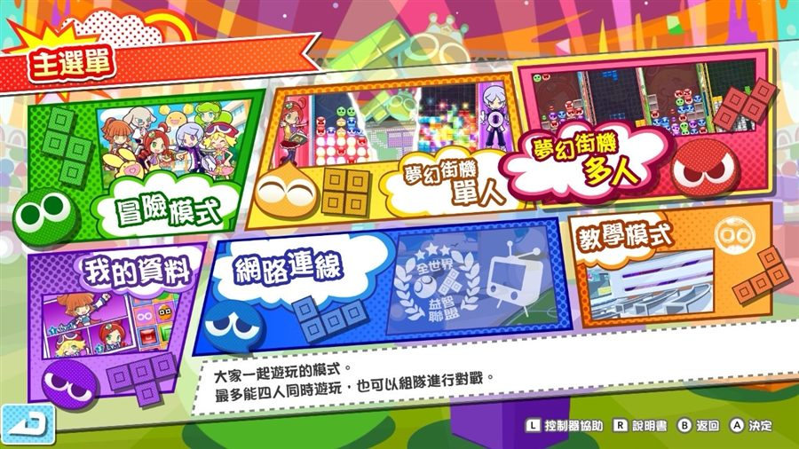
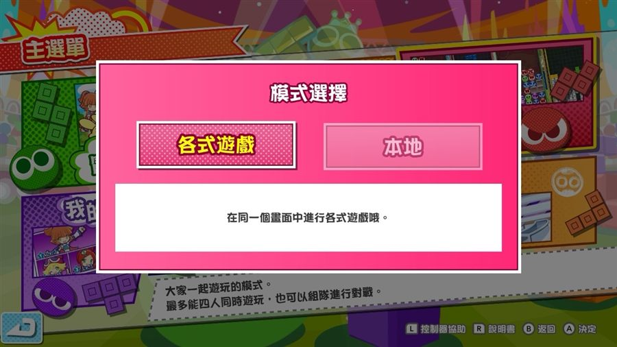
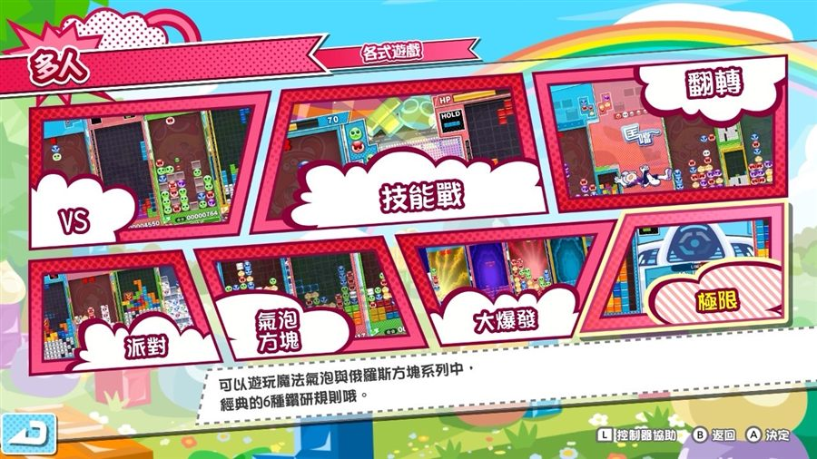
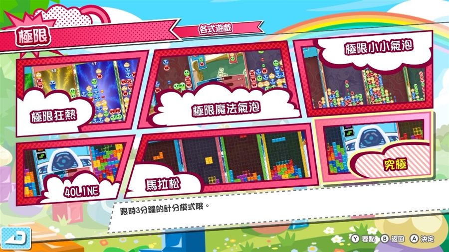
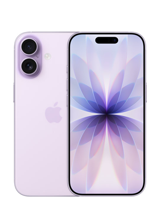
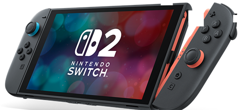

規則與獎品Rules & Prizes
每隊由 2 名【正職】同仁組成，比賽以隊伍為單位進行。每人僅能報名一支隊伍，不得重複組隊。 Teams of two full-time employees. Each person can join only one team.
各階段設定 Settings by stage
| 項目Item | 海選Qualifiers · 拚總分 Total score | 64 至 4 強Top 64 → 4 · 三戰兩勝 Best of 3 | 四強決賽Final 4 · 三戰兩勝 Best of 3 |
|---|---|---|---|
| 模式Mode | 極限模式（究極）Ultra | 派對模式Party | 派對模式Party |
| 角色Character | 主辦方指定林檎（Ringo）× 4 | 亞米緹（Amitie）＋ 林檎（Ringo） | 開放自選角色Free choice |
| 道具Items | 無None | 普通Normal | 普通Normal |
| 瞬間掉落Hard drop | OFF | ON | ON |
| 操作模式Controls | 一般 A | 一般 A | 一般 A |
場地 Venue
- 練習、海選至 4 強Practice, qualifiers to Final 4
- 20 樓20F
- 決賽Final
- 尾牙當天At the year-end party
午休練習開放時間 Lunch practice
中午 12:00 – 13:0012:00 – 13:00 noon · 20 樓 20F
12/14一 Mon
12/15二 Tue
12/16三 Wed
12/22二 Tue
12/29二 Tue
01/05二 Tue
如何找到「究極」模式 How to find Ultra mode
海選用的是「究極」：限時 3 分鐘的計分模式。照下面四步就能找到，練習時也可以用。The qualifiers use Ultra, a 3-minute score mode. Follow these four steps.

主選單 → 夢幻街機 多人
模式選擇 → 各式遊戲
多人 → 極限
極限 → 究極
獎品 Prizes · 每位隊員各一份 One for each player

第 1 名 1stiPhone 17
第 2 名 2ndSwitch 2 主機- 第 3～4 名 3rd–4thInsta360 GO Ultra